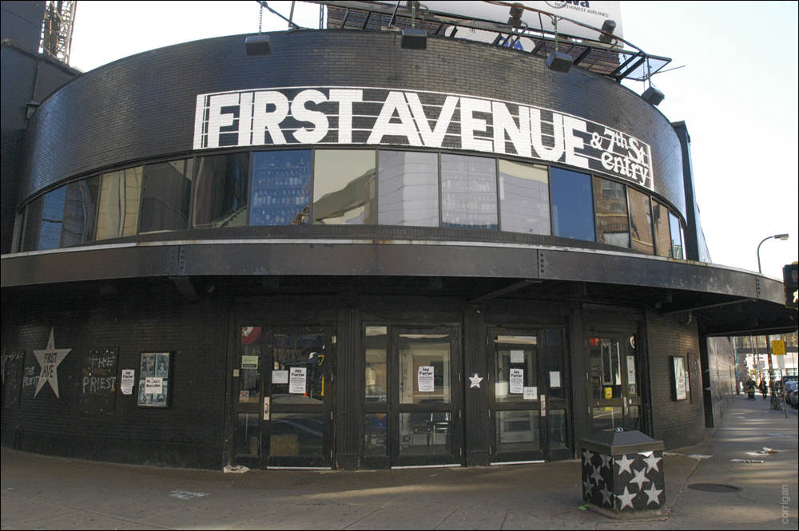

The Minneapolis Sculpture Garden is an 4.5 ha) park in Minneapolis, Minnesota. It is located near the Walker Art Center, which operates it in coordination with the Minneapolis Park.
The Museum of Russian Art
The Museum of Russian Art is a museum in the city of Minneapolis, exhibiting a collection of Russian art of the 20th century, especially the Soviet era.

First Avenue
The Mainroom and The Entry are two music venues housed in the same landmark building in downtown Minneapolis.
Minneapolis lies on both banks of the Mississippi River, just north of the river's confluence with the Minnesota River, and adjoins Saint Paul, the state's capital. The city is abundantly rich in water, with 13 lakes, wetlands, the Mississippi River, creeks and waterfalls; many connected by parkways in the Chain of Lakes and the Grand Rounds National Scenic Byway.